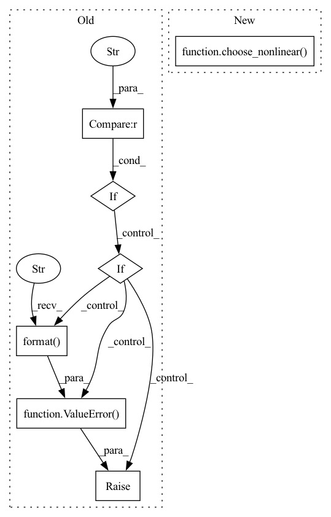

Pattern ID :4842

Before Change
end_net.append(nn.Conv1d(hidden_channels, out_channels, kernel_size=1, stride=1, bias=False))
if output_nonlinear is not None:
if output_nonlinear == "tanh":
end_net.append(nn.Tanh())
elif output_nonlinear == "softmax":
end_net.append(nn.Softmax(dim=1))
else:
raise ValueError("Not support {}".format(output_nonlinear))
self.end_net = nn.Sequential(*end_net)
def forward(self, input, enc_h=None):
After Change
else:
kwargs = {}
module = choose_nonlinear(output_nonlinear, **kwargs)
end_net.append(module)
self.end_net = nn.Sequential(*end_net)
In pattern: SUPERPATTERN
Frequency: 3
Non-data size: 7
Instances
Fragment ID: 17057508
Project Name: tky823/dnn-based_source_separation
Commit Name: 10282099ca12b94e9b9870841d4de0252506baab
Time: 2021-12-05
Author: delta9guitar97@gmail.com
File Name: src/models/wavenet.py
M Class Name: WaveNet
N Class Name: WaveNet
M Method Name: __init__(19)
N Method Name: __init__(19)
M Parent Class: nn.Module
N Parent Class: nn.Module
M File Name: src/models/wavenet.py
N File Name: src/models/wavenet.py
M Start Line: 24
M End Line: 39
N Start Line: 33
N End Line: 41
'>
Before Change
self.linear = nn.Linear(in_channels, out_channels)
if self.nonlinear:
if self.nonlinear == "relu":
self.nonlinear0d = nn.ReLU()
elif self.nonlinear == "leaky-relu":
self.nonlinear0d = nn.LeakyReLU()
else:
raise ValueError("Not support nonlinear {}".format(self.nonlinear))
if self.dropout:
self.dropout0d = nn.Dropout(dropout)
After Change
self.linear = nn.Linear(in_channels, out_channels)
if self.nonlinear:
self.nonlinear0d = choose_nonlinear(nonlinear)
if self.dropout:
self.dropout0d = nn.Dropout(dropout)
'>
Fragment ID: 17057510
Project Name: tky823/dnn-based_source_separation
Commit Name: 64531bda6a98db471a3bfec05b151120e4cbe9b6
Time: 2021-10-09
Author: 40362510+tky823@users.noreply.github.com
File Name: src/models/cunet.py
M Class Name: ControlDenseBlock
N Class Name: ControlDenseBlock
M Method Name: __init__(7)
N Method Name: __init__(7)
M Parent Class: nn.Module
N Parent Class: nn.Module
M File Name: src/models/cunet.py
N File Name: src/models/cunet.py
M Start Line: 520
M End Line: 527
N Start Line: 777
N End Line: 777
'>
Before Change
self.conv1d = nn.Conv1d(in_channels, out_channels, kernel_size, stride=stride, dilation=dilation)
if self.nonlinear:
if self.nonlinear == "relu":
self.nonlinear1d = nn.ReLU()
elif self.nonlinear == "leaky-relu":
self.nonlinear1d = nn.LeakyReLU()
else:
raise ValueError("Not support nonlinear {}".format(self.nonlinear))
if self.dropout:
self.dropout1d = nn.Dropout(dropout)
After Change
self.conv1d = nn.Conv1d(in_channels, out_channels, kernel_size, stride=stride, dilation=dilation)
if self.nonlinear:
self.nonlinear1d = choose_nonlinear(nonlinear)
if self.dropout:
self.dropout1d = nn.Dropout(dropout)
'>
Fragment ID: 17057511
Project Name: tky823/dnn-based_source_separation
Commit Name: 64531bda6a98db471a3bfec05b151120e4cbe9b6
Time: 2021-10-09
Author: 40362510+tky823@users.noreply.github.com
File Name: src/models/cunet.py
M Class Name: ControlConvBlock
N Class Name: ControlConvBlock
M Method Name: __init__(11)
N Method Name: __init__(11)
M Parent Class: nn.Module
N Parent Class: nn.Module
M File Name: src/models/cunet.py
N File Name: src/models/cunet.py
M Start Line: 666
M End Line: 673
N Start Line: 918
N End Line: 918